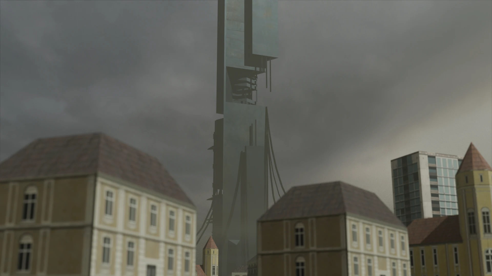
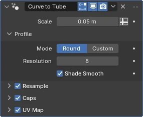

Summary
The first megastructure I made was the Citadel from Valve Software's Half-Life 2. The Citadel is a massive metal skyscraper, and most importantly for this website, it is heavily mechanised. This facilitates the addition of an animation to the model, which is something I wanted to include in this project. In figure 1 you can see a high quality render of the final model, which was used on the home page of the website.

Modelling
To create this model I used the 3D modelling software Blender. As it was the first model I made for this project, it uses less advanced techniques than the other two, being created mostly with basic extrusion and subdivision tools. As a result of this very purposeful and meticulous modelling process, the complete model has the lowest polygon count of the three megastructures on the website. This process was assisted by Half-Life 2's developer console, which allowed me to enable no-clip mode and fly around the Citadel's in-game model. This also aided me in accurately recreating the animation of the Citadel transitioning into its "high alert" state, which is triggered in-game at the start of the Route Kanal chapter.
Main Structure
I started my creation of the Citadel by creating an equilateral triangle which I then extruded upwards to create the main body of the structure. I added the triangular pillar that runs up the entirety of one side by subdividing the surface vertically into 4 sections and then moved the central edge outwards. This was the strategy I used to create all similar extrusions on the structure, although the majority do not span the entire height of the structure, thus requiring horizontal subdivisions as well.
The middle section of the Citadel, where the "rib-like" structures are housed was created by first adding horizontal subdivisions to the two faces opposite the triangular pillar. These subdivisions added new faces to the model which I could then delete to create the gap in the tower. The edges that were left behind could then be connected with new faces to create the walls of the gap.
Every animated part of the structure was created as a separate object in Blender. Many of these parts were created by duplicating the main body of the structure and then resizing and deleting faces to create the desired shape. The ribs are an exception to this, which were created from a plane that I reshaped into the desired profile. Due to my inexperience with modelling the Citadel and the other models on this website are largely non-manifold which fortunately this is not an issue for most aspects of this project but it did cause some issues when creating the ribs.
Surroundings

When creating the Citadel model I realised that it would be important to include some of the surrounding environment to give more context of the Citadel's impressive scale. This gives me the sense of awe that draws me to megastructures. This is a philosophy that I tried to follow for all models on this website but it is most important with the Citadel due to the cables that hang from its superstructure to the surrounding city. This is something that is a very recognisable aspect of the Citadel's design.
After careful consideration and some experimentation, I decided to use Blender's Bézier curve feature to create the cables. This allowed me to easily give them a natural curve shape which was proving difficult to achieve with basic extrusion techniques. I then used Blender's "Curve to Tube" modifier to give the curves a 3D shape as seen in figure 3. To ground the cables in the city, I created a large circular ground plane, but this alone did not adequately give context I desired alone.
In order to add more context to the scale of the structure, I decided to add some of the surrounding buildings. As I did not want to spend hours modelling the entire city, I made a collection of six different building models using the same techniques I used to create the Citadel. These models are then randomly placed on the ground plane using Blender's "Scatter on Surface" modifier. In Poisson Disk mode, this modifier allowed me to randomly distribute the buildings across the ground with a minimum distance between them and random rotation. This adequately invoked the idea of a sprawling city surrounding the Citadel even though it is very clearly just a scattering of a few building models.
Textures and Animations
As mentioned earlier, this was the first model I created for this project, and as a result, it only uses simple textures from the game. This is best shown in the textures of the surrounding buildings, where all the detail is provided by the textures rather than the geometry, which are just simple boxes. For the Citadel itself, I just used a simple metal texture, and did not give much regard for the UV mapping of the model. This still looked good even with the stretched textures.
To animate the Citadel entering its "high alert" state, I used Blender's animation timeline. Due to the mechanical nature of this transformation, many objects could have their keyframes copied. Most notably here, are the five shield segments that retract into the main body. However, as each of these have a different starting location, I animated their Delta Transform properties instead of the normal location and rotation properties. This allowed me to copy the keyframes between each of the segments without them all moving to the same location.
Interactivity
Other than the shared interactivity features described on the general tab, the
Citadel is primarily focused on creating a dynamic soundscape. This is achieved using a generalised
audio system that is configured using a constant in the JavaScript file for the Citadel. This makes
it very easy to add and configure new sounds, which I took advantage of to create a rich soundscape
with many of the iconic sounds from the game. The system works by scheduling sounds to play at
random intervals between the specified minimum and maximum time using the
set timeout
function. When a sound is scheduled to play, the system will pick a random location within the city
to play the sound from using three.js's PositionalAudio class. As some of the sounds
are very loud, fine tuning this system took a lot of trial and error to not overwhelm the user with
too many sounds. The configuration array can be seen in the code snippet below.
The only other interactivity feature that is unique to the Citadel is the ability to trigger the
"high alert" animation using a button in the control panel. This animation can be played in reverse
by clicking the button again, a feature that was achieved by setting three.js's
AnimationAction.timeScale property to negative one. This animation is accompanied by
the Citadel's iconic alarm sound, which is played globally to convey the sense of how omnipresent
the Citadel and Combine's reach is.